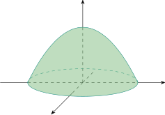

3.2 Iterated Integrals
Suppose that \(f\) is a function of two variables that is continuous on the rectangle \(R = [a,b]\times [c,d]\).
We use the notation \(\displaystyle {\int ^d_c(x,y)]\,dy}\) to mean that \(x\) is held constant or fixed and \(f(x,y)\) is integrated with respect to \(y\) from \(c\) to \(d\) ( partial integration). \[A(x) = \int ^d_c f(x,y)\, dy\] integrating \(A(x)\) with respect to \(x\) from \(a\) to \(b\) \[\int ^b_a A(x)\, dx = \int ^b_a \Bigg [\int ^d_c f(x,y)\, dy \Bigg ] dx\]
\[\int ^b_a\int ^d_c f(x,y)\,dy\,dx = \int ^b_a\Bigg [ \int ^d_c f(x,y)\,dy\Bigg ] dx\hspace {0.3cm} \cdots \cdots \cdots \cdots \hspace {0.5cm} (1)\]
The integral on the RHS of (1) is called a iterated integral.
Similarly, the iterated integral \[\int ^d_c\int ^b_a f(x,y)\,dx\,dy = \int ^d_c\Bigg [ \int ^b_a f(x,y)\,dx\Bigg ] dy\]
Evaluate the iterated integrals \[(a)\hspace {0.5cm} \int ^3_0\int ^2_1 x^2y\hspace {0.1cm} \,dy\,dx\hspace {2cm} (b)\hspace {0.5cm} \int ^2_1\int ^3_0 x^2y\,\hspace {0.1cm} dx\,dy\]
Solution. \begin {align*} (a)\hspace {2cm} \int ^3_0\int ^2_1 x^2y\hspace {0.1cm} \,dy\,dx & = \int ^3_0\Bigg [ \int ^2_1 x^2y\hspace {0.1cm} \,dy\Bigg ]\hspace {0.1cm} \,dx\\\\ & = \int ^3_0\frac {3}{2}x^2\hspace {0.1cm}\, dx\\\\ & = \frac {27}{2}\\ \end {align*}
\begin {align*} \hspace {2cm} \int ^2_1\int ^3_0 x^2y\hspace {0.1cm}\, dx\, dy & = \int ^2_1\Bigg [ \int ^3_0 x^2y\,\hspace {0.1cm}\, dx\Bigg ] dy\\\\ & = \int ^2_1 9y\hspace {0.1cm}\, dy\\\\ & = \frac {27}{2}\\\\ \end {align*}
Fubini’s Theorem
If \(f\) is continuous on the rectangle \(R = \big \{ (x,y)\hspace {0.1cm} \big |\hspace {0.1cm} a\leq x \leq b\hspace {0.1cm} , \hspace {0.1cm} c\leq y\leq d\big \}\hspace {0.2cm}\) then \begin {align*} \iint \limits _R f(x,y)\hspace {0.1cm} dA & = \int ^b_a \int ^d_c f(x,y)\hspace {0.1cm}dy\hspace {0.1cm} dx\\\\ & = \int ^d_c \int ^b_a f(x,y)\hspace {0.1cm}dx\hspace {0.1cm} dy\\\\ \end {align*}
Evaluate the double \(\displaystyle {\iint \limits _R \big (x-3y^2\big )\hspace {0.1cm}dA}\) \[R = \big \{ (x,y)\hspace {0.1cm} \big |\hspace {0.1cm} 0\leq x \leq 2\hspace {0.1cm} , \hspace {0.1cm} 1 \leq y \leq y \big \}\]
Solution. \begin {align*} \iint \limits _R \big (x-3y^2\big )\hspace {0.1cm}dA & = \int ^2_0\int ^2_1 \big (x-3y^2\big )\hspace {0.1cm} dy \hspace {0.1cm} dx\\ & = \int ^2_0 (x - 7)\hspace {0.1cm}dx\\ & = -12\\ \end {align*}
\begin {align*} \int ^2_1\int ^2_0 \big (x-3y^2\big )\hspace {0.1cm} dx \hspace {0.1cm} dy & = \int ^2_1 \big (2 - 6y^2\big )\hspace {0.1cm} dy\\ & = -12\\\\ \end {align*}
Evaluate \(\displaystyle {\iint \limits _R y \sin (xy)\hspace {0.1cm}dA}\) where \(R = [1,2]\times [0,\pi ]\)
Solution. \begin {align*} \iint \limits _R y \sin (xy) \hspace {0.1cm} dA & = \int ^{\pi }_0 \int ^2_1 y\sin (xy) \hspace {0.1cm}dx\hspace {0.1cm} dy\\ & = \int ^{\pi }_0 \big (-\cos 2y + \cos y\big )\hspace {0.1cm} dy\\ & = 0\\ \end {align*}
Solution. \begin {align*} \iint \limits _R y \sin (xy) \hspace {0.1cm} dA & = \int ^2_1 \int ^{\pi }_0 y\sin (xy) \hspace {0.1cm}dy\hspace {0.1cm} dx\\\\ & =\int ^2_1 \Bigg ( \frac {-\pi \cos \pi x}{x} + \frac {\sin \pi x}{x^2}\Bigg ) \hspace {0.1cm}dx \end {align*}
Let \(u = \dfrac {-1}{x} \implies du = \dfrac {dx}{x^2}\)
\(dv = \pi \cos \pi x \implies v = \sin \pi x\)
\[\int \frac {\pi \cos \pi x}{x}dx = \frac {- \sin \pi x}{x} - \int \frac {\sin \pi x}{x^2}dx\]
\begin {align*} \int ^2_1 \Bigg ( \frac {-\pi \cos \pi x}{x} + \frac {\sin \pi x}{x^2}\Bigg ) & = \frac {-\sin \pi x}{x}\Bigg |^2_1\\ & = 0\\\\ \end {align*}
Find the volume of the solid \(S\) that is bounded by the elliptic parababloid \[x^2+ 2y^2 + z = 16\] the planes \(x=2, y = 2\) and the three coordinate planes.

Solution.
We note that the solid \(S\) lies under the surface \(z = 16 - x^2 -2y^2\) and above the square \(R = [0,2]\times [0,2]\). \begin {align*} V & = \iint \limits _R \big ( 16 - x^2 - 2y^2\big )\hspace {0.1cm} dA\\ & = \int ^2_0\int ^2_0 \big (16 - x^2 -2y^2 \big ) \hspace {0.1cm}dx\hspace {0.1cm} dy\\ & = \int ^2_0\Bigg ( \frac {88}{3} - 4y^2\Bigg )\hspace {0.1cm}dy\\ & = 48\\ \end {align*}
In the special case where \(f(x,y)\) can be factored as the product of a function of \(x\) only and a function of \(y\), then the double integral as follows:-
Suppose \(f(x,y) = g(x)h(x)\hspace {0.5cm}, \hspace {0.5cm} R = [a,b]\times [a,b]\)
\[ \iint \limits _R f(x,y)\hspace {0.1cm}dA = \int ^b_ag(x)\,dx\int ^b_ah(y)\,dy\]
Evaluate \(\displaystyle {\iint \limits _R \sin x \cos y \hspace {0.1cm} dy\hspace {0.1cm}dx}\) where \(R = \big [ 0,\pi /2\big ] \times \big [ 0,\pi /2\big ]\).
Solution.
\(\displaystyle {\iint \limits _R \sin x \cos y \hspace {0.1cm} dy\hspace {0.1cm}dx = \int ^{\pi /2}_0 \sin x \hspace {0.1cm} dx \int ^{\pi /2}_0\cos y \hspace {0.1cm}dy\\ = 1}\)
Questions on this section
Stuck on something here? Ask below and it stays attached to this topic.